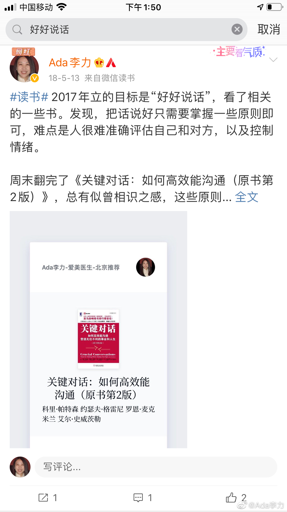

@Ada李力:
#不明所以#
最近我时不时会借用事例，教育或纠正明俊说话难听的问题，玩笑也好，直接开骂也好，总之态度跟以前不一样。
其实他一直是这个样子，为什么我现在才纠正？
因为之前我说话也难听，跟他差不多的水平，就没意识到这个毛病有多令人讨厌。
2017年看了些语言，情绪，沟通，表达方面的书，逐渐修正了下自己的问题。只要对说自己说出口的话保持警觉，通常就不会说话太难听了。如果难听，那我确实是故意的。
但我对明俊不会说话的毛病，还是则听之任之，谈朋友的时候，他说过自己不会说话，我还以为这是谦虚之词，这么多年下来，发现人其实都有自知之明，他确实不会说话。他说话难听倒也不是出于恶意，只是没人教过他，该怎么说话。
我装聋作哑很长一段时间，是认为人基本改变不了自己了。即使我可以改变自己，但也懒得改变别人。可是对女儿洗脑的初见成效，让我发现，语言的力量很大，那我为什么不纠正下老公的说话难听问题？尤其我和闺女还可能是受益者。
我也怕明俊以后变成个人见人烦的老头，如果出现那样的结果，或许就有我的默许原因。
最近我时不时会借用事例，教育或纠正明俊说话难听的问题，玩笑也好，直接开骂也好，总之态度跟以前不一样。
其实他一直是这个样子，为什么我现在才纠正？
因为之前我说话也难听，跟他差不多的水平，就没意识到这个毛病有多令人讨厌。
2017年看了些语言，情绪，沟通，表达方面的书，逐渐修正了下自己的问题。只要对说自己说出口的话保持警觉，通常就不会说话太难听了。如果难听，那我确实是故意的。
但我对明俊不会说话的毛病，还是则听之任之，谈朋友的时候，他说过自己不会说话，我还以为这是谦虚之词，这么多年下来，发现人其实都有自知之明，他确实不会说话。他说话难听倒也不是出于恶意，只是没人教过他，该怎么说话。
我装聋作哑很长一段时间，是认为人基本改变不了自己了。即使我可以改变自己，但也懒得改变别人。可是对女儿洗脑的初见成效，让我发现，语言的力量很大，那我为什么不纠正下老公的说话难听问题？尤其我和闺女还可能是受益者。
我也怕明俊以后变成个人见人烦的老头，如果出现那样的结果，或许就有我的默许原因。
- 